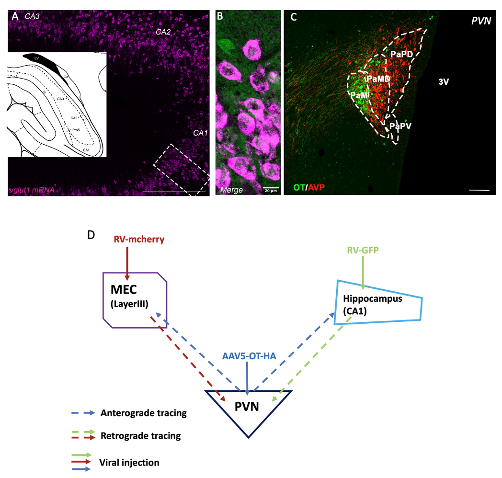
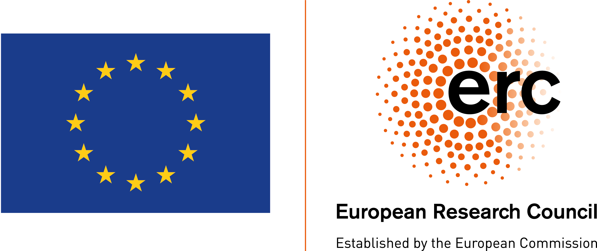
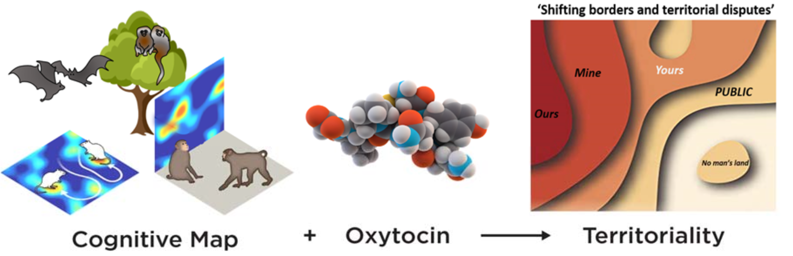
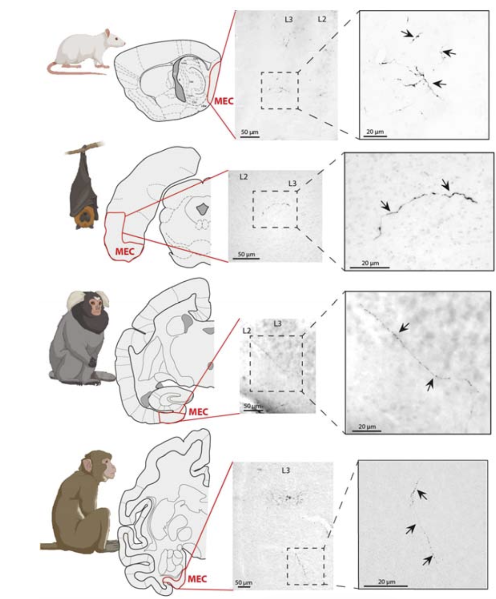
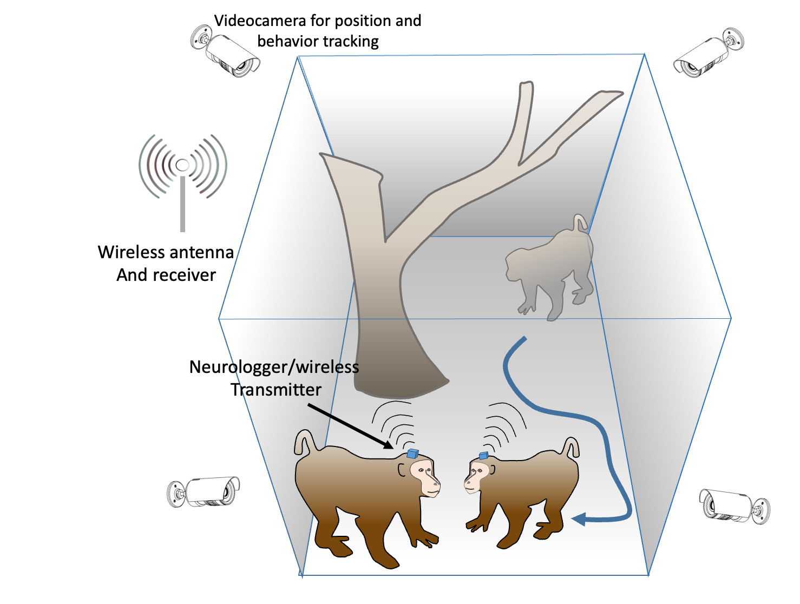
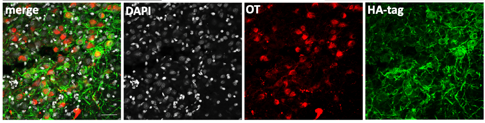

01
Mapping the oxytocin system
Mapping oxytocin receptors and tracing connections between the hypothalamic oxytocin system and medial temporal regions involved in spatial representation.


We navigate a world that is more than a physical map. The same place can feel like ours, theirs, shared or off-limits, depending on who is there and on our relationship with them.
OxytocINspace is an ERC Synergy project exploring how the brain gives space this social meaning — and whether oxytocin helps connect the neural systems that represent space with those that regulate social relationships.

A comparative search for common principles linking oxytocin, spatial representation and social behaviour across very different mammalian societies.

Collaborators: Nachum Ulanovsky - Weizmann Institute of Science, Israel ; Shlomo Wagner - Haifa University, Israel ; Sylvia Wirth - CNRS, France
Exploring social territory in the primate brain
For macaques, space is inherently social. Where an individual moves, how closely it approaches another, and which areas it occupies depend on social relationships.
The Sirigu Lab investigates how the brain represents this social geography and how oxytocin changes it.
We combine the observation of spontaneous social behaviour with neural recordings and targeted manipulation of the brain's oxytocin system, in collaboration with Sylvia Wirth at NeuroPrime in Lyon.
Mapping oxytocin receptors and tracing connections between the hypothalamic oxytocin system and medial temporal regions involved in spatial representation.

Recording brain activity as macaques move through space and interact freely with one another.

Using DREADDs to selectively control oxytocin neurons in the PVN, and test how changing their activity reshapes social and territorial behaviour.

Can oxytocin change not only how we respond to others,
but how the brain maps the space we share with them?